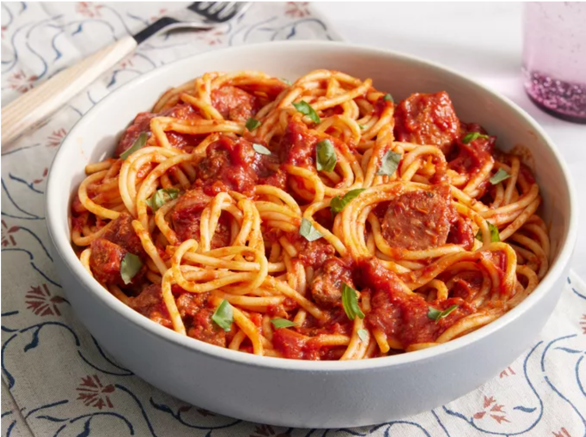

Home
How to make pasta sauce

Description
This recipe not only makes pasta sauce, but makes the BEST
sauce
you have ever tasted. You'll be amazed with how simple
it is to make.
Ingredients
- 1 pound sweet Italian sausage, sliced
- ¾ pound lean ground beef
- ½ cup minced onion
- 2 cloves garlic, crushed
- 1 (28 ounce) can crushed tomatoes
- 2 (6.5 ounce) cans tomato sauce
- 1 tablespoons white sugar
- 1 ½ teaspoons dried basil
- 1 teaspoon Italian seasoning
- ½ teaspoon fennel seed
- ½ teaspoon salt
- ¼ teaspoon ground black pepper
Steps
- Gather all ingredients
- Cook sausage, beef, onion, and garlic in a large pot
or Dutch oven over medium heat until browned; drain fat.
- Stir in crushed tomatoes, tomato sauce, tomato paste, and water.
- Mix in sugar, basil, Italian seasoning, fennel seed, salt, and pepper.
- Cover and simmer, stirring occasionally,
until cooked through, about 1 ½ hours.
- Gather all ingredients
- Serve with your favorite pasta and enjoy!